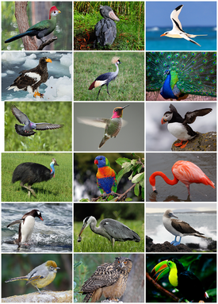

Птицы (лат. Aves) — группастраница 1 теплокровных яйцекладущих позвоночных животных, традиционно рассматриваемая в ранге отдельного класса[К 1]. Представляют собой хорошо обособленную на фоне остальных современных животных группу, одним из наиболее характерных признаков представителей которой является покров из перьев, предохраняющий тело от неблагоприятных изменений температуры и играющий важную роль при полёте[1].
Русское слово «птица» восходит к праслав. *ръtica, которое является суффиксальным производным от *ръtа, родственного латыш. putns «птица», лит. putýtis «пташка», лат. putus «дитя», putila «птенец», оскск. рuclо- «дитя», др.-инд. पुत्रः (putráḥ IAST) «дитя, сын», др.-инд. पोतः (рótаḥ IAST) «детёныш животного», и восходящего в свою очередь к пра-и.е. *pōu-/*pəu-/*pu-/*pū- «маленький»[7][8].
Латинское слово avis восходит к пра-и.е. *h2ewis (в традиционной реконструкции *awis) «птица», от которого происходят также др.-инд. विः (viḥ IAST) «птица», др.-греч. ἀετός «орёл», арм. հավ (hav) «курица», валл. hwyad «утка»[9][10].
Размеры и масса тела птиц различны. Масса крупных летающих птиц обычно не превышает 12—16 кг[6][11] (лебеди, грифы, дрофы)[6] при размахе крыльев до 3 м (пеликаны, альбатросы)[6][12]. Самые мелкие из птиц — некоторые виды колибри — имеют максимальную массу тела 3—7 г[13]. Утрата способности к полёту часто приводит к увеличению размеров[6]: масса крупных пингвинов достигает 40 кг, казуаров
Самой маленькой из ныне живущих птиц считается колибри-пчёлка — длина тела не превышает 5,7 см[16]. Самой крупной современной птицей является африканский страус с высотой до 2,7 м и массой до 156 кг[12][15]. Таким образом, масса самой маленькой птицы в 66 тысяч раз меньше массы самой крупной из ныне живущих[14].
Fonts Google